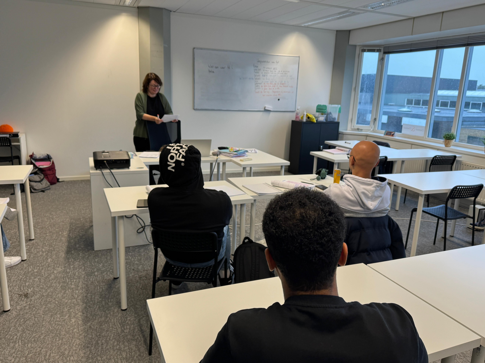

After getting residence permit, you can already start taking Dutch lessons while you are still at the COA location. You will be registered at a municipality (In Dutch: Gemeente) where you will get a house. The official integration (In Dutch: Inburgering) starts once your Plan Inburgering en Participatie (PIP) is made at your municipality. You have three years to get the diploma. Integration is compulsory. There are 3 different routes for integration:
Z-Route
B1-Route
OnderwijsRoute

Students sitting in a class taking Dutch lesson
Z-Route
Z-route is self-sustainability route. This route is for those people who are generally old and uneducated people. They are unable to pass the B1 Dutch exam. So, they just need to attend the regularly classes for at least 800 hours during three hours. They can also apply for the B1 exam if they are willing to do so. But it is not mandatory for them. Sometimes they are asked to do voluntary work to get involved in the society.
B1-Route
B1-route is for those who want to work. They need to pass the B1 Dutch exam in all the 4 skills (speaking, listening, reading, and writing). They also need to pass KNM exam. Besides that, they also take classes to get to know the Dutch labor market.
Books that are part of Dutch course
Onderwijs Route
Onderwijsroute is specially for the students who like to study here in English or in Dutch. They need to pass the State Exam Program II (B2 exam), if they wish to study in Dutch or Program I (B1 exam), if they want to study in English. They also take basic Math and English classes. They need to pass Math exam and B1 English test along with B1 or B2 Dutch exam to get the integration diploma.